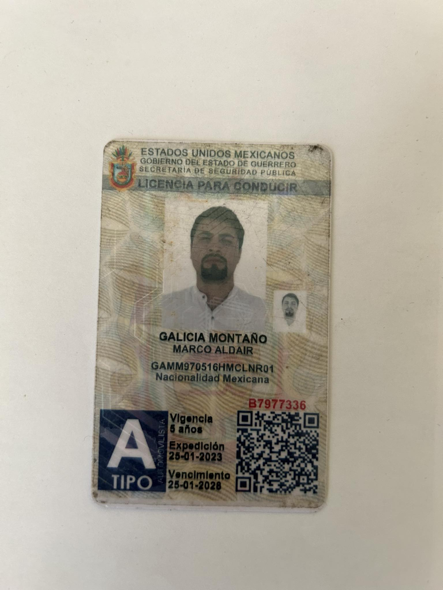
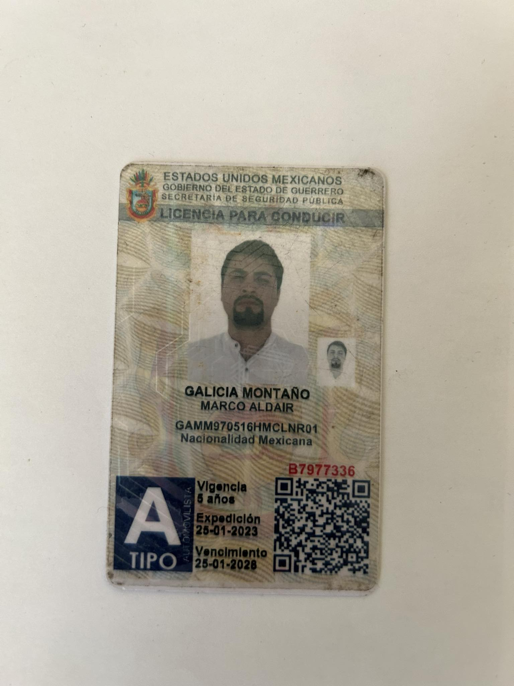

Originario de Santa Isabel Ixtapan, Atenco, Estado de México.
Razón Social:5514575615.
Correo electronico: aldairhernandez572@gmail.com
Edad: 26 años.
Mi 1er empelo fue en una Taquería ingrese a los 14 años dure 3 años atendiendo a los clientes.
Mi 2do empleo fue en una tienda de ropa (OGGI JEANS) y dure 2 años en el área de almacén y ventas de mostrador.
Mi 3er empleo fue en una refaccionaria de diésel 3 años en el área de producción y ventas.
Mi 4to empleo fue en un taller de carrocerias ingrese como ayudante general dure 2 años.
Mi 5to empleo fue en Izzi como auxiliar en construcción para red de fibra optica dure 1 año en Monterrey Nuevo León.
Mi 6to empleo fue en Megacable en Tijuana como oficial de construccion de red en fibra optica.
Y mi ultimo empleo igual en mega cable pero en el puesto de tecnico instalador ATD
Estudie la primaria en el año 2003 y concluí en el 2009 (Esc. primaria Justo cierra)
La secundaria la estudie en 2010 y concluí en 2013(Esc.sec. of. Pino Suarez)
Ingrese a la preparatoria en 2017 y concluí en 2020(Epo. No 142 Lázaro cárdenas)
Posteriormente ingrese a la universidad en 2021 en la carrera de Informatíca Administrativa la cual no la he concluido "Tira de materias cursadas hasta mi ultimo periodo escolar"(Universidad Autónoma del Estado de México.)
Ingrese a un curso técnico en la Edayo sobre sistemas informáticos, uso de excel, word y redes.
Cuento con cursos de capacitación de gripo carlos slim y mega cable para mi desarrollo personal y laboral.
Habilidades:
Manejo de computadoras de escritorio y laptop.
Manejo de paquetería office Word, Excel, Access, Power Point.
Ingles muy poco.
Uso de herramientas como taladros, martillos, esmeril, pinzas, cizallas, etc.
Conocimientos:
Mantenimiento preventivo y correctivo de equipos de computo.
Instalación y actualización de sistemas operativos(Linux o Windows).
Construcción e instalaciones de fibra óptica.
Crear sitios web con html, css y java.
Uso de c++, atom, studio code etc.
Se me facilita manejar carros automático y estándar.
Usar programas y aplicaciones de desarrollo web , redes sociales, publicidad, base de datos, redes computacionales.
Me gusta ser una persona ordenada y limpia.
Trabajo en Equipo.
Ine
licencia
 

Certificado de prepa
Ultimo comprobante de estudios

RFC
Numero de seguro social